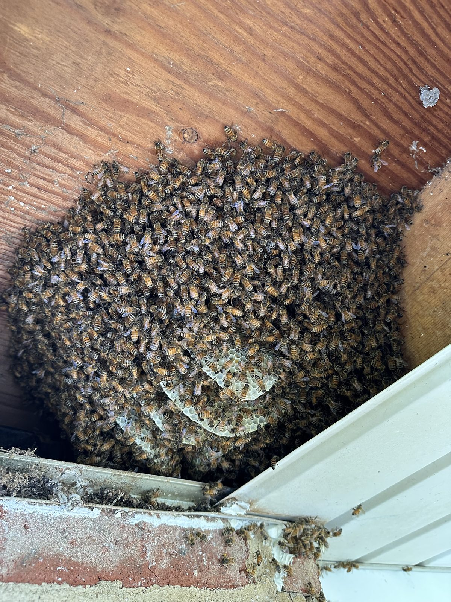

Bees in your walls, brick, or siding
You've been watching bees go in and out of the same gap in your siding for a week now, and you've got two worries: how much honey is piling up inside that wall, and whether you're about to get quoted for demolition. Fair questions. Here's the honest version — a colony in a wall is real and it does need to come out, but it comes out alive, and the sooner you call the smaller the opening we have to make.
What a colony does inside a wall
A swarm that moved into your wall in May is a full colony by July: sheets of wax comb hanging in the stud bay, brood in the middle, and honey — real weight of it — above. An established colony can store 20 to 80+ pounds of honey in a wall void. The bees themselves come and go through one entry point: a gap where siding meets trim, a knot hole, an old cable penetration, or the weep holes in brick veneer, which are bee-sized by design and lead straight into the air gap behind the brick.
Signs you've got an established colony and not just curious scouts: steady two-way traffic at a single hole from morning to evening, a low hum in the wall on warm nights, and — in older infestations — warm spots or dark staining on interior walls where honey has begun to seep.

The two mistakes that make it worse
- Don't spray them. Killing a wall colony leaves the comb and all that honey behind with no bees to cool and defend it. The wax sags in summer heat, honey runs down inside the wall, and now you've got fermenting honey, staining, ants, roaches, mice, wax moths, and a smell that lasts months — plus robber bees from every colony in range trying to get in. It routinely turns a bee job into a demolition job.
- Don't seal the hole. Trapping thousands of bees inside a wall doesn't kill them — it redirects them. They follow light and very often chew through drywall, outlets, and trim into your living room. Sealing comes last, after the bees and comb are out.
How live removal from a wall works
- Locate the colony. Traffic patterns, listening, and wall temperature tell us where the comb actually is — it's often not directly behind the entry hole.
- Open the wall. Usually from outside (siding or sheathing off) — sometimes from inside if that's the cleaner repair. Brick veneer jobs often come out through the interior wall, since brick doesn't go back together.
- Vacuum the bees alive. A low-suction bee vacuum collects the workers; we locate and cage the queen. The bees go to one of our Central PA apiaries — never exterminated.
- Cut out every piece of comb. Brood comb comes with us (it's rubber-banded into frames so the colony rebuilds); honey gets removed so nothing is left to rot or attract pests.
- Clean and seal. The void is scraped and cleaned so the scent doesn't advertise "move-in ready" to next spring's swarms, and the entry is sealed.
Timing matters: the colony only gets bigger and heavier. A June removal is a smaller job — and a smaller repair — than a September one. Free estimates, and every job starts with an honest on-site look at where they are and what it takes.
Wall & siding bee FAQ
Are you sure they're honey bees and not yellow jackets?
Not until we see them — and it matters, because yellow jackets in a wall are a different (pest-control) job handled by our sister company Lawns Plants & Pests. Text us a photo and we'll tell you in minutes. Our guide to telling them apart helps too.
How do bees get behind brick?
Through weep holes — the intentional gaps at the bottom of brick veneer that let moisture escape. They're the perfect bee doorway, and the air gap behind brick connects to wall voids. Behind-brick colonies are very common in Harrisburg's brick housing stock, and they're removable; access is just planned differently.
Will the bees come back next year?
Not if the comb is removed and the void is cleaned and sealed — that's the whole point of doing a real removal instead of a spray-and-pray. Leftover comb scent is the #1 reason "the bees came back" after someone else's shortcut job.
Who fixes the wall afterward?
We put back what we open whenever possible and leave surfaces ready for finish repair. Larger repairs are coordinated with your contractor — we'll walk them through exactly what was opened and why.
What does it cost?
It depends on where the colony is, how established it is, and what access takes — which is why estimates are free and done on site. What we can promise: an honest read on the size of the job before any work starts.
Bees going into your wall or siding?
Serving Harrisburg, Hershey, Camp Hill, Mechanicsburg, and all of Central PA. Free estimates — and the bees leave alive.
Call or Text 717-379-3248